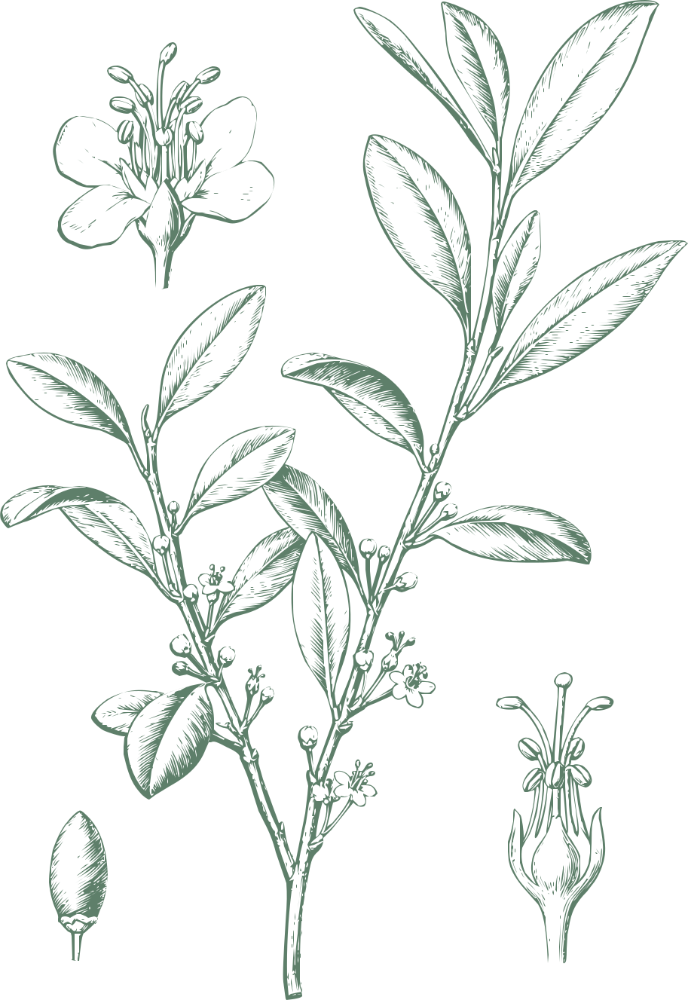

Ustawienia
OrganizacjaPersonelSystemO Crux
1.0.0wydanie „Krasnodrzew”
- Wdrożone
- 11 grudnia 2026 · gabinety 01 Nowodworska, 02 Białowieska
- Zakres wydania
- obłożenie godzinowe foteli, role i dostępy, pulpity sieci, gabinetu i moje, administracja
- Dane pacjentów
- brak w tym wydaniu (od 1.1 „Ratania”)
- Baza
- PostgreSQL 17, Supabase eu-central-1 (Frankfurt), kopie nocne, PITR
- Ostatnie odświeżenie analityki
- dziś 10:40 · pełne 02:10
- Dokumenty
- Podręcznik 1.0 · Changelog · Definicje metryk · Procedury
Zgłoś problemChangelogLicencje bibliotek

Krasnodrzew pospolity · Erythroxylum coca
Z jego liści wzięło się pierwsze znieczulenie miejscowe w stomatologii (1884). Roślina przewodnia wydania 1.0.
F. E. Köhler, Medizinal-Pflanzen (1887)